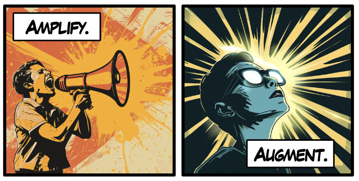

Interactive visualization for human-centered AI
Naimul Hoque
Assistant Professor of Computer Science
University of Iowa
nhoque@uiowa.edu


Recent News
- Jan 2025: Started faculty life at University of Iowa.
- April 2024: We are organizing a workshop on accessible visualization at IEEE VIS. Consider attending!
- Jan 2024: Two first-authored papers and a large collaboration got accepted at ACM CHI 2024
- Nov 2023: Paper led by Shahreen is accepted at ACM CSCW 2024!
My research interest sits at the intersection of Human-Computer Interaction (HCI), Information Visualization, and Artificial Intelligence (AI). I study how data visualization can help us to address key human concerns (e.g., fairness, transparency, and provenance) in AI-assisted applications. Please see my CV, research statement, and publications for more details.
I obtained a PhD in Information Studies from the University of Maryland, College Park. Before that, I obtained a Master's in Computer Science from Stony Brook University and a BSc in Computer Science from the University of Dhaka, Bangladesh. My official first name is Md Naimul, but you can call me Naimul (pronunciation: na-ei-mul). Md stands for Mohammod, a common name in Bangladesh. It is so common that at some point, we started using the short form!
Research and Publications
